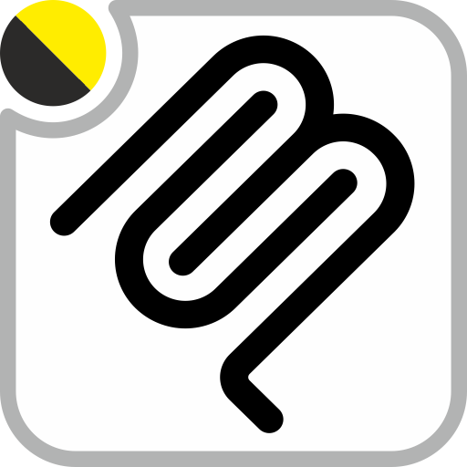

Patanegra AI engine and MCP server for Odoo. Reference host of PAAP — the Patanegra Application Agent Protocol.
AI Engine app (not Settings → General Settings, not Technical). Providers, agents, URL whitelist and MCP users live in that app.
Paste the provider API key on the provider form. Set failover order on the agent (the Chatboo agent, or the one your MCP user uses). Secrets never travel in the addon.
The product AI layer. It owns providers, agents, contexts, skills, Safe Plan writes and the MCP endpoint that Cursor (and other clients) call. Chatboo is a separate module: it owns the conversation UI and talks to this engine. This module does not depend on Chatboo.
Knowledge that is generic to the suite lives here (geo fabric, partners,
accounting, ACL…). Pilot-only skills, Sesame/CDMON connectors and
the Occidente failover chain belong in occ_custom_ai, not
in this repo.
pns_*). Domain cheat-sheets regenerate; they are not versioned as customer dumps.pns_ai_chatboo. Install Chatboo if people will talk from the Odoo systray.occ_custom_ai.pns_geo / geo.service. The engine must not call Google or OSM itself.env credentials stay in the database (or the instance env). The module only leaves the slot.httpx, pydantic; on Odoo 14 also openpyxl>=3.1.2). Then install pns_base and this module. Install pns_geo if maps or geocoding will be used.occ_custom_ai after the engine so Occidente skills and connectors seed on top. Paste Sesame/CDMON tokens there, not here.| Module | Where | Role |
|---|---|---|
pns_ai_mcp |
O14 and O19 | This engine: providers, knowledge, MCP, Safe Plan |
pns_ai_chatboo |
O14 and O19 | In-Odoo chat UI; depends on the engine |
occ_custom_ai |
O14 and O19 | Occidente pack: pilot skills and connectors. Product never depends on it. |
UI source in English. Layout: common/ plus OWL1 (O13–14) and OWL2 (O15–19+) stacks.
PATANEGRA Soft — Apache License 2.0 (OSI approved). See LICENSE.